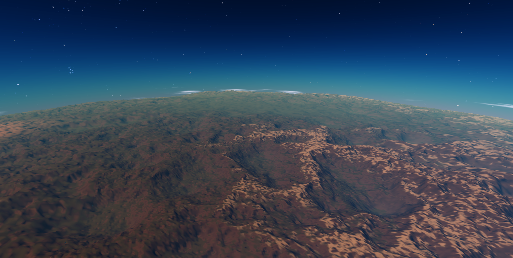
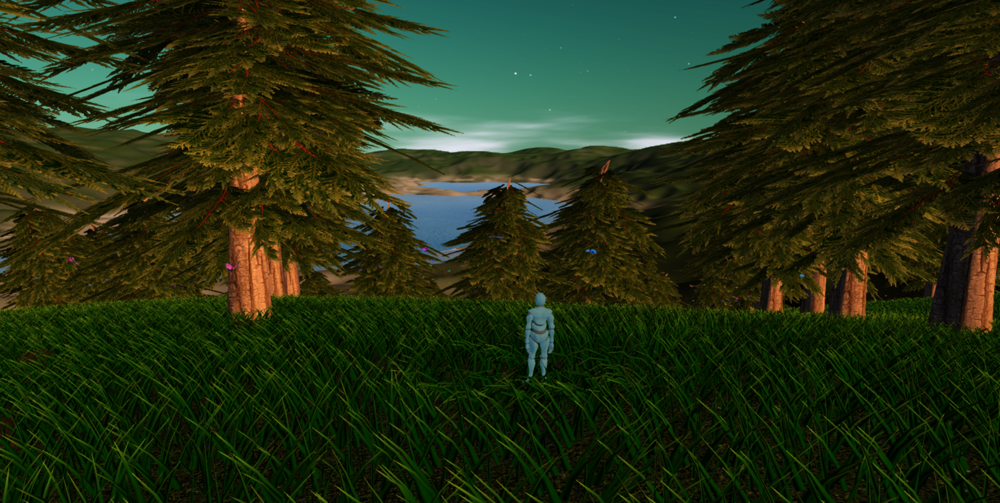

Cosmos Journeyer API Documentation
Cosmos Journeyer


What is Cosmos Journeyer?
Cosmos Journeyer is the open-source procedural universe running inside a web page that makes space exploration accessible for everyone. Planets are fully explorable from orbit down to the surface, and the universe is virtually infinite.
My vision for the project
Disclaimer: This vision for Cosmos Journeyer is a long-term guiding light and may not reflect the game’s current state. Development is ongoing, and there’s still a long way to go!
Themes and atmosphere
Cosmos Journeyer is a game centered on exploration: gazing at breathtaking cosmic landscapes, uncovering strange dimensional anomalies, encountering unexpected friends, and, of course, taking plenty of screenshots!
Unlike many space games where politics and combat dominate, here, the Universe itself takes center stage.
The goal is to evoke the following feelings in the player, in this order:
- The beauty of the cosmos: I want players’ hearts to be filled with wonder at the breathtaking creations of the universe.
- The vastness of the universe: This sense of wonder should be tinged with a subtle awareness of the universe’s overwhelming scale (enough to inspire awe, but not fear).
- A sense of purpose: The game's narrative should give direction to the player’s journey, infusing it with meaning.
The narrative
The story is a personal journey: you are a young pilot embarking on your first mission as part of an exploration initiative, following in your father's footsteps.
Early in the game, you intercept a mysterious, disturbing message originating from the event horizon of a black hole. As if that weren’t strange enough, you soon realize that the message is from your father, who disappeared years ago during a mission.
This discovery sets you on a path through the strangest realms of the universe, where you’ll experience the sublime vastness of the cosmos, meet fascinating characters, and confront profound questions about the nature of reality.
“Everything that could be, is.”
Gameplay
Players primarily pilot spaceships but can also explore the interiors of their ships on foot. The transition between piloting in space and walking on a planet’s surface is seamless, creating an immersive experience.
Spaceships can be upgraded and repaired at space stations in exchange for credits, which players earn by completing various exploration or trade missions as well as through free exploration. Since the game’s focus is not on grinding, mission rewards are intentionally generous.
The gameplay experience is also designed to be relaxing. I plan to incorporate unconventional, calming activities on planet surfaces, such as horseback riding, boat rides, and fishing, to add depth to the sense of exploration and relaxation.
Main tutorial
Following the example set by the Great Plateau in Zelda: Breath of the Wild, the game begins in a self-contained star cluster that players cannot leave until they reach a specific milestone. This could be achieved by designing a star cluster that forms a disconnected graph, isolated from the rest of the universe through carefully chosen distances and a limited initial jump range.
This introductory star cluster would be fully handcrafted to make the best possible first impression on players. The story would guide them through significant locations in a logical sequence—such as space stations, a black hole, and a planet terminator—to introduce the narrative while also presenting mini-tutorials along the way.
Upon reaching the milestone, the player gains an extended jump range, granting access to the rest of the universe and opening up the game’s full scope.
Sponsor
Help me make Cosmos Journeyer a reality! The development is time-consuming but generates no revenue by itself.
Sponsoring the project on Patreon or GitHub Sponsors will help secure the future of the project.
The project also has a ko-fi page at https://ko-fi.com/cosmosjourneyer if you feel like buying me a coffee!
Try it now!
The main website of the project is online at https://cosmosjourneyer.com/
The main deployment of the procedural universe can be accessed https://barthpaleologue.github.io/CosmosJourneyer/
Why Cosmos Journeyer?
Why make Cosmos Journeyer when games like Elite Dangerous, Star Citizen, No Man's Sky or Kerbal Space Program already exist?
There are many reasons of course but here are the main ones:
- Open Source: Other games such as Elite are dependent on their studios to keep them alive. When the game will no longer be profitable, they will stop supporting it and then the games will be dead forever (see Kerbal Space Program 2 debacle for a recent example). By going open-source, Cosmos Journeyer will be able to evolve and improve continuously, without the need for a studio. Anyone can pick it up and make it their own.
- Exploration Focused: I always felt that exploration was the most interesting part of space games. At the same time I feel the other games are too focused on combat, trading or multiplayer content. I want Cosmos Journeyer to be an exploration first game, where your main drive is to discover cool things, take pictures, and dream for a bit.
- Personal: I don't know it's just so exciting to create an entire universe from scratch. It really is a dream comming true for me.
Share your screenshots!
There is a subreddit for Cosmos Journeyer at https://www.reddit.com/r/CosmosJourneyer/. Don't hesitate to share screenshots or just ask questions about the project!
Contributing
Contributions are welcome! There is too much to do for one person alone.
If you want to contribute, you will find guidelines and ideas here.
Documentation
The documentation is online at https://barthpaleologue.github.io/CosmosJourneyer/docs/
Additionally, the ARCHITECTURE.md file contains a big picture explanation of the architecture of the project.
To build it locally, run npm run build:docs and then npm run serve:docs to serve it at localhost:8081.
Roadmap
You can have a look at the roadmap of the project on the website at https://cosmosjourneyer.com/
The deadlines are not set in stone and can be moved around as I am not working full time on the project.
Features
Every telluric planet and moon has a surface that can be explored by the player using a spaceship, or by foot!

Cosmos Journeyer allows to travel from one celestial body to another without any loading screen, giving the player a seamless experience while exploring.

Planet surfaces are filled with procedural vegetation and rocks and butterflies to make them feel more alive.

Cosmos Journeyer generates a virtually infinite amount of star systems that all have a star, often planets, and sometimes moons.

Build
First, clone the repository and install the dependencies with pnpm install.
Web
To build the web version of Cosmos Journeyer, run pnpm build. Everything will be built in the dist folder.
To start the production server version, run pnpm serve:prod. The development version can be started with pnpm serve.
Tauri
Cosmos Journeyer can be built as a desktop application using Tauri!
First you will need a bazillion dependencies, here is a list of some of them if you are using a Debian based OS:
sudo apt install -y libwebkit2gtk-4.0-dev libgtk-3-dev libsoup2.4-dev libjavascriptcoregtk-4.0-dev librsvg2-dev libwebkit2gtk-4.0-dev libappindicator3-dev patchelf
Then you can build the application with pnpm tauri build or run it with pnpm tauri dev.
Contributors
Thank you to all the people who have contributed to Cosmos Journeyer!
Credits
All credits can be found in the credits panel of the game.
Special Thanks
- Martin Molli for his fearless refactoring of the messy code base in its early days
- The people from BabylonJS for their amazing work on the BabylonJS framework and their help on the forum
- My family for their continuous support